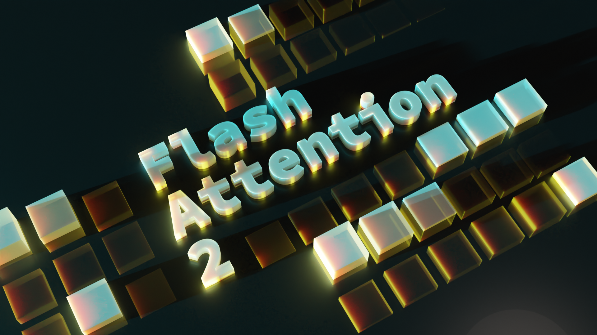
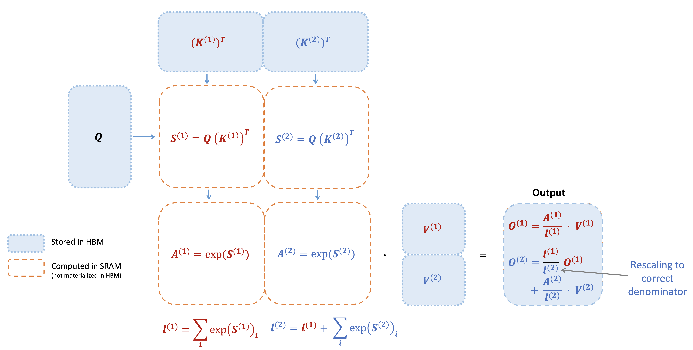
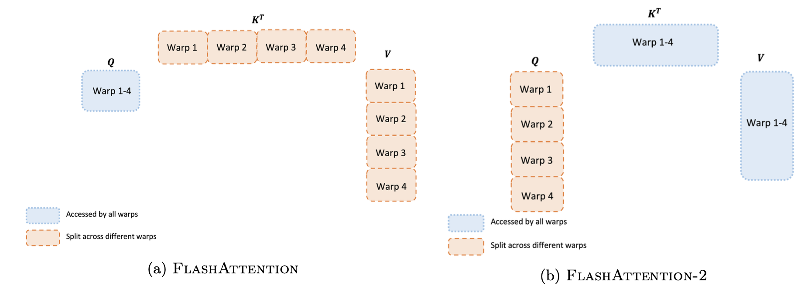
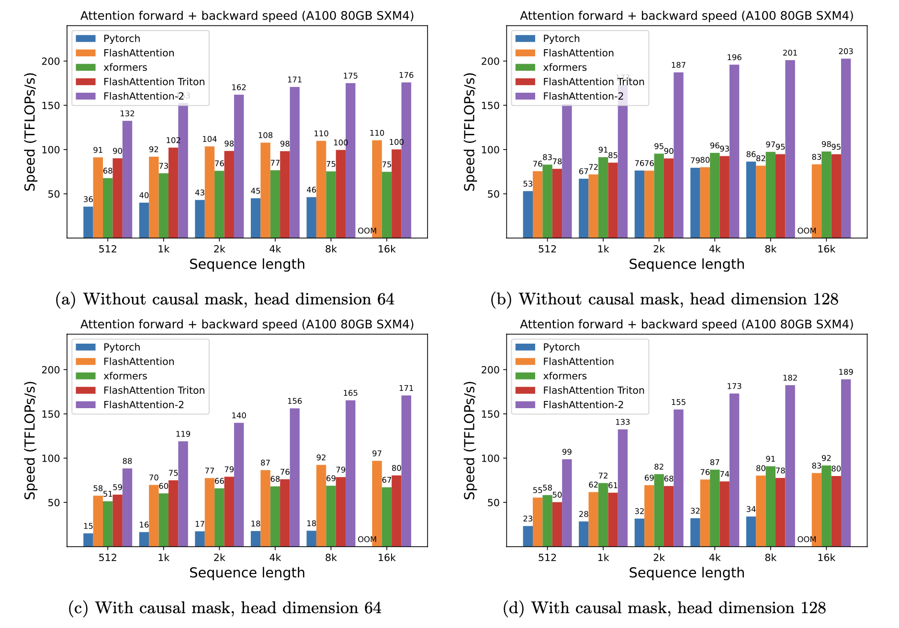
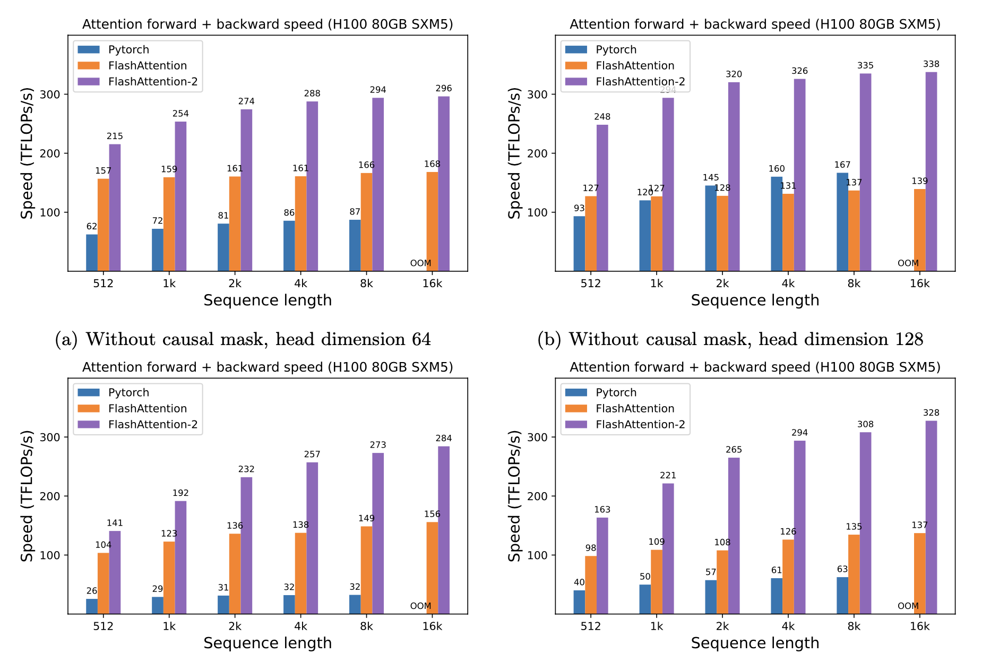

Jul 17, 2023 · 8 min read

Just within the last year, there have been several language models with much longer context than before: GPT-4 with context length 32k, MosaicML's MPT with context length 65k, and Anthropic's Claude with context length 100k. Emerging use cases such as long document querying and story writing have demonstrated a need for models with such long context. Scaling up the context length of Transformers is a challenge, since the attention layer at their heart has runtime and memory requirements that are quadratic in the input sequence length.
A year ago, we released FlashAttention, a new algorithm to speed up attention and reduce its memory footprint—without any approximation. We’ve been very happy to see FlashAttention being adopted by many organizations and research labs to speed up their training & inference (see this page for a partial list). Even though FlashAttention was already 2-4x faster than optimized baselines at the time of its release, it still has quite a bit of headroom. FlashAttention is still not nearly as fast as optimized matrix-multiply (GEMM) operations, reaching only 25-40% of the theoretical maximum FLOPs/s (e.g. up to 124 TFLOPs/s on A100 GPU).
In the past few months, we’ve been working on the next version, FlashAttention-2, that makes FlashAttention even better. Rewritten completely from scratch to use the primitives from Nvidia’s CUTLASS 3.x and its core library CuTe, FlashAttention-2 is about 2x faster than its previous version, reaching up to 230 TFLOPs/s on A100 GPUs (FP16/BF16). When used end-to-end to train GPT-style language models, we reach a training speed of up to 225 TFLOPs/s (72% model FLOP utilization). In this blogpost, we describe some of the bottlenecks of FlashAttention, and how we use better parallelism and work partitioning to get significant speedup.
FlashAttention-2 is available at: https://github.com/Dao-AILab/flash-attention
FlashAttention is an algorithm that reorders the attention computation and leverages classical techniques (tiling, recomputation) to significantly speed it up and reduce memory usage from quadratic to linear in sequence length. Tiling means that we load blocks of inputs from HBM (GPU memory) to SRAM (fast cache), perform attention with respect to that block, and update the output in HBM. By not writing the large intermediate attention matrices to HBM, we reduce the amount of memory reads/writes, which brings 2-4x wallclock time speedup.
Here we show a diagram of FlashAttention forward pass: with tiling and softmax rescaling, we operate by blocks and avoid having to read/write from HBM, while obtaining the correct output with no approximation.

However, FlashAttention still has some inefficiency due to suboptimal work partitioning between different thread blocks and warps on the GPU, causing either low-occupancy or unnecessary shared memory reads/writes.
We tweak the algorithm from FlashAttention to reduce the number of non-matmul FLOPs. This is important because modern GPUs have specialized compute units (e.g., Tensor Cores on Nvidia GPUs** that makes matmul much faster. As an example, the A100 GPU has a max theoretical throughput of 312 TFLOPs/s of FP16/BF16 matmul, but only 19.5 TFLOPs/s of non-matmul FP32. Another way to think about this is that each non-matmul FLOP is 16x more expensive than a matmul FLOP. To maintain high throughput, we want to spend as much time on matmul FLOPs as possible.
We rewrite the online softmax trick used in FlashAttention to reduce the number of rescaling ops, as well as bound-checking and causal masking operations, without changing the output.
The first version of FlashAttention parallelizes over batch size and number of heads. We use 1 thread block to process one attention head, and there are overall (batch_size * number of heads) thread blocks. Each thread block is scheduled to run on a streaming multiprocessor (SM), and there are 108 of these SMs on an A100 GPU for example. This scheduling is efficient when this number is large (say >= 80), since we can effectively use almost all of the compute resources on the GPU.
In the case of long sequences (which usually means small batch sizes or small number of heads), to make better use of the multiprocessors on the GPU, we now additionally parallelize over the sequence length dimension. This results in significant speedup for this regime.
Even within each thread block, we also have to decide how to partition the work between different warps (a group of 32 threads working together). We typically use 4 or 8 warps per thread block, and the partitioning scheme is described below. We improve this partitioning in FlashAttention-2 to reduce the amount of synchronization and communication between different warps, resulting in less shared memory reads/writes.

For each block, FlashAttention splits K and V across 4 warps while keeping Q accessible by all warps. This is referred to as the “sliced-K” scheme. However, this is inefficient since all warps need to write their intermediate results out to shared memory, synchronize, then add up the intermediate results. These shared memory reads/writes slow down the forward pass in FlashAttention.
In FlashAttention-2, we instead split Q across 4 warps while keeping K and V accessible by all warps. After each warp performs matrix multiply to get a slice of Q K^T, they just need to multiply with the shared slice of V to get their corresponding slice of the output. There is no need for communication between warps. The reduction in shared memory reads/writes yields speedup
FlashAttention only supported head dimensions up to 128, which works for most models but a few were left out. FlashAttention-2 now supports head dimension up to 256, which means that models such as GPT-J, CodeGen and CodeGen2, and StableDiffusion 1.x can use FlashAttention-2 to get speedup and memory saving.
This new version also supports multi-query attention (MQA) as well as grouped-query attention (GQA). These are variants of attention where multiple heads of query attend to the same head of key and value, in order to reduce the size of KV cache during inference and can lead to significantly higher inference throughput.
We measure the runtime of different attention methods on an A100 80GB SXM4 GPU for different settings (without / with causal mask, head dimension 64 or 128). We see that FlashAttention-2 is around 2x faster than FlashAttention (as well as its other implementations in the xformers library and in Triton, using the newest dev version as of July 14, 2023). Compared to a standard attention implementation in PyTorch, FlashAttention-2 can be up to 9x faster.
Here we show attention forward + backward speed on A100 80GB SXM4 GPU (BF16).

Just running the same implementation on H100 SXM5 GPUs (using no special instructions to make use of new hardware features such as TMA and 4th-gen Tensor Cores), we obtain up to 335 TFLOPs/s.
Here we show attention forward + backward speed on H100 SXM5 GPU (BF16).

When used to train a GPT-style model end-to-end, FlashAttention-2 helps achieve up to 225 TFLOPs/s on A100 GPU (72% model FLOPs utilization). This is a 1.3x end-to-end speedup over an already very optimized model with FlashAttention.
| Model | Baseline | FlashAttention | FlashAttention-2 |
|---|---|---|---|
| GPT3-1.3B, 2K context | 142 TFLOPs/s | 189 TFLOPs/s | 196 TFLOPs/s |
| GPT3-1.3B, 8K context | 72 TFLOPs/s | 170 TFLOPs/s | 220 TFLOPs/s |
| GPT3-2.7B, 2K context | 149 TFLOPs/s | 189 TFLOPs/s | 205 TFLOPs/s |
| GPT3-2.7B, 8K context | 80 TFLOPs/s | 175 TFLOPs/s | 225 TFLOPs/s |
Baseline: A popular training framework without FlashAttention.
FlashAttention-2 is 2x faster than FlashAttention, which means that we can train models with 16k longer context for the same price as previously training a 8k context model. We’re excited about how this can be used to understand long books and reports, high resolution images, audio and video. FlashAttention-2 will also speed up training, finetuning, and inference of existing models.
In the near future, we plan to collaborate with folks to make FlashAttention widely applicable in different kinds of devices (e.g. H100 GPUs, AMD GPUs), as well as new data types such as FP8. As an immediate next step, we plan to optimize FlashAttention-2 for H100 GPUs to use new hardware features (TMA, 4th-gen Tensor Cores, fp8). Combining the low-level optimizations in FlashAttention-2 with high-level algorithmic changes (e.g. local, dilated, block-sparse attention) could allow us to train AI models with much longer context. We’re also excited to work with compiler researchers to make these optimization techniques easily programmable.
We thank Phil Tillet and Daniel Haziza, who have implemented versions of FlashAttention in Triton and the xformers library. FlashAttention-2 was motivated by exchange of ideas between different ways that attention could be implemented. We are grateful to the Nvidia CUTLASS team (especially Vijay Thakkar, Cris Cecka, Haicheng Wu, and Andrew Kerr) for their CUTLASS library, in particular the CUTLASS 3.x release, which provides clean abstractions and powerful building blocks for the implementation of FlashAttention-2. We thank Driss Guessous for integrating FlashAttention to PyTorch. FlashAttention-2 has benefited from helpful discussions with Phil Wang, Markus Rabe, James Bradbury, Young-Jun Ko, Julien Launay, Daniel Hesslow, Michaël Benesty, Horace He, Ashish Vaswani, and Erich Elsen. Thanks to Stanford CRFM and Stanford NLP for the compute support. We thank Dan Fu and Christopher Ré for their collaboration, constructive feedback, and constant encouragement on this line of work of designing hardware-efficient algorithms. We thank Albert Gu and Beidi Chen for their helpful suggestions on early drafts of the FlashAttention-2 technical report.